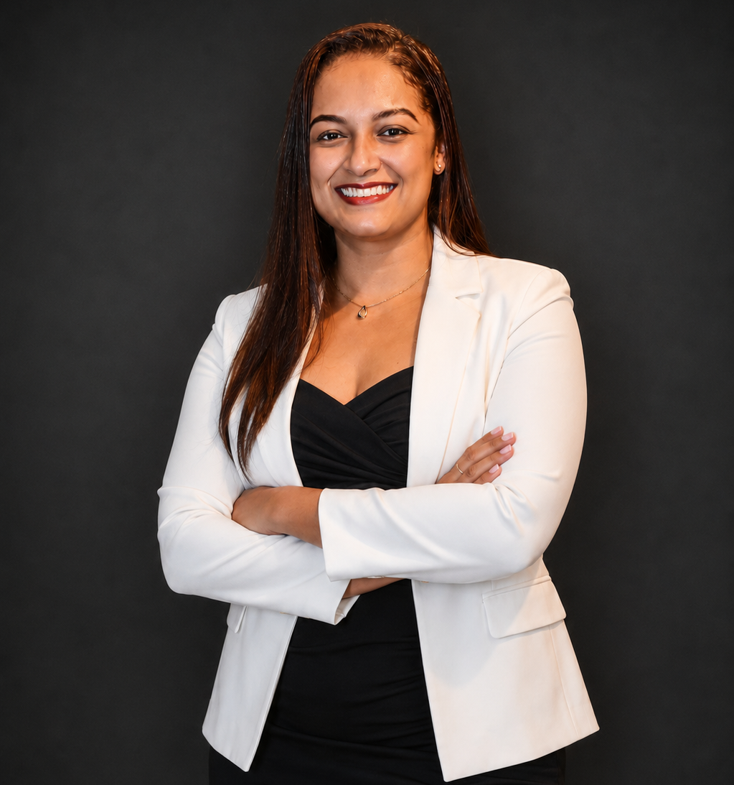

Nossas Palestrantes
Conheça as grandes mulheres que guiarão a nossa trilha.

Jani Valença
Palestrante
Formada em Design de Moda e Vestuário e especialista em Consultoria de Imagem Estratégica, Visagismo, Morfopsicologia e Consultoria de Imagem para Óculos. Com mais de 10 anos de experiência, já realizou mais de 280 palestras em grandes empresas e participou de mais de 130 programas de TV. Seu trabalho une imagem, comunicação e posicionamento profissional, mostrando que a forma de se apresentar é uma poderosa ferramenta para fortalecer a identidade, a confiança e a credibilidade.

Dani Dornelas
Palestrante
Contadora, Educadora Financeira, Especialista em Psicologia Econômica e formada em Alta Performance por Joel Jota. Com 19 anos de experiência na área contábil, é Conselheira do CRC-ES, da ASCONCA e do Conselho Municipal de Recursos Fiscais de Cariacica, além de Coordenadora da Comissão Estadual da Mulher Profissional da Contabilidade.

Cristiane Nicomedes
Palestrante
Contadora, empresária e consultora em gestão de negócios, com 15 anos de experiência nas áreas contábil, tributária e financeira. É fundadora e CEO da Exata | Ecossistema Contábil, empresa com atuação nacional e especialização em Construção Civil. Pós-graduada em Produtividade e Contabilidade e em Auditoria e Gestão Tributária, também atua como palestrante, mentora e idealizadora da Exata Academy, compartilhando conhecimentos sobre gestão, finanças, precificação, inteligência artificial e desenvolvimento empresarial.

Ariane Mendonça
Palestrante
Psicóloga, consultora e auditora trabalhista, pós-graduada em Direito do Trabalho e em Gestão Integrada de SST e eSocial, além de graduada em Recursos Humanos. Atua como consultora e instrutora nas áreas trabalhista e previdenciária, com mais de 15 anos de experiência prática. É sócia da Ensicon Consultoria, Auditoria e Cursos e da Quattro Contabilidade.
.jpeg)
Debora Carriço
Palestrante
Contadora, pós-graduada em Direito Tributário e sócia-diretora da Carriço Contabilidade. Com mais de 15 anos de experiência, atua em planejamento tributário e patrimonial, reorganização societária e consultoria estratégica. Também possui experiência como docente nas áreas de Contabilidade e Estatística.

Thayanne Braz
Palestrante
Contadora, com experiência em empresas de capital aberto e reguladas pela CVM. Especialista em contabilidade societária, governança corporativa e normas internacionais, possui trajetória como ex-auditora de Big Four e atualmente atua como contadora no Grupo Wine. É graduada pela UFES e possui MBA em Controladoria e Finanças pela USP/ESALQ. Membro da Comissão da Mulher Profissional da Contabilidade do CRC-ES.

Monique Jesus
Palestrante
Contadora, especialista em Automação Fiscal, com MBA em Contabilidade, Compliance e Direito Tributário e graduanda em Análise e Desenvolvimento de Sistemas. Com 14 anos de experiência na área tributária, atua na Facilitar Serviços Contábeis desde 2024, com consultoria, obrigações acessórias e planejamento tributário, além do desenvolvimento de sistemas e automações voltados às necessidades da empresa. À frente da Neeko Automação Inteligente, presta serviços de automação, desenvolvimento de sistemas, sites e ferramentas digitais. É membro da Comissão Estadual da Mulher Profissional da Contabilidade do CRC-ES.
Mediadoras
As profissionais que conduzirão os painéis e debates.
.jpeg)
Cintia Martins
Mediadora
Contadora, empresária e especialista em Contabilidade para o Setor Imobiliário e gestão de negócios. Possui especialização em Controladoria, Finanças, IFRS e Procedimentos Contábeis, além de mais de 12 anos de experiência na construção civil. É fundadora da CMT Assessoria e Consultoria Contábil e sócia da Tasso & Scalzer Hub de Negócios Contábeis, atuando também na implantação e otimização de sistemas integrados, automação de processos e gestão empresarial.
.jpg)
Cleide Waiandt
Mediadora
Técnica em Contabilidade, graduada em Direito e em Ciências Contábeis, com mais de 20 anos de experiência na área. Atua na CWD Contabilidade, com foco em consultoria estratégica, fechamento contábil, obrigações acessórias e planejamento tributário. É membro da Comissão da Mulher Contabilista desde 2022 e atualmente exerce a função de secretária da Comissão da Mulher Profissional da Contabilidade do CRC-ES.
.jpeg)
Derliane Damasceno
Mediadora
Contadora, pós-graduada em Logística Empresarial, membro da Comissão da Mulher Profissional da Contabilidade do CRC-ES, conselheira do COMMUS e diretora do Sescon-ES.

Karina Zucolotto
Mediadora
É contadora, empresária contábil e sócia da MZM Contabilidade Empresarial, com mais de 23 anos de experiência. Atua nas áreas de contabilidade estratégica, planejamento tributário, planejamento patrimonial. É Conselheira do CRC-ES (quadriênio 2026–2029) e Coordenadora Adjunta da Comissão CRC Mulher ES, contribuindo para o fortalecimento da liderança feminina e o desenvolvimento da profissão contábil no Espírito Santo.